FİLLİ BOYA ÖNERİLER
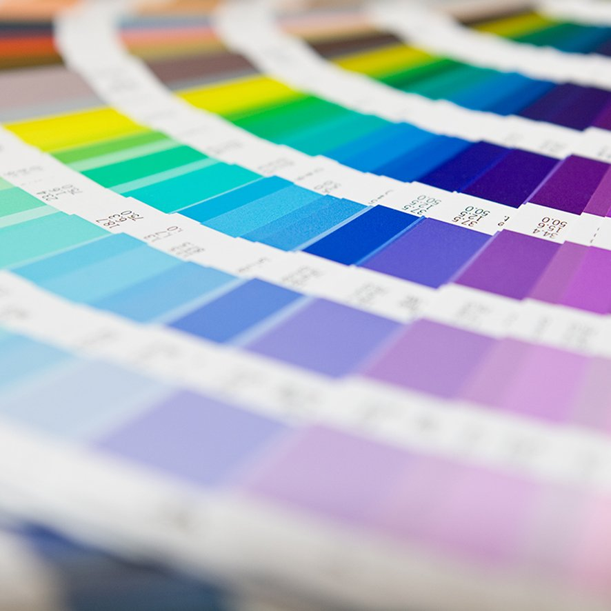
DEKORATİF
Dekoratif boya ile evinizde farklı fonlar yaratmak Filli Boya Dekoratif boya serileri ile mümkün! ister romantik, ister antik.. klişeleri bir kenara bırakın,zıtlıklardan ilham alın istediginiz renk ve teknikleri kullanarak dekoratif boya ile stilinizi duvarlara yansıtın, malzeme listesi ve dekoratif boya uygulaması hakkında bilmemiz gerekenler burada. DETAYlI BİLGİEN İYİ BOYA
Kimyageller,renk uzmanları,mimarları ve ustalarıyla filli Boya çatısı altında en iyi boya elde ettigimiz boya en iyi boya olmalı diyerek yoka devam ediyoruz!Kaliteli malzemelerle üretilen en iyi boya, bileşenleri iyi formüle edilmiş,üretimden paketlemeye kadar defalarca test edilerek üretim bandından sizlere ulaşıyor. En iyi boya daha fazla bilgi alın. DETAYlI BİLGİ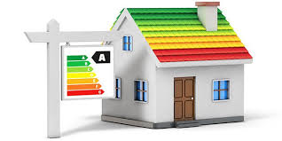
ISI YALITIM(MONTALAMA)
Isı yalıtımı binada yalıtım saglaması icin dış cepheye uygulanan bir sistemdir. Isı yalıtım ile hem kendıizi hem de
çevrenizi icin fayda sağlarsınız.Tekniğe uygun bir ısı yalıtımı uygulaması ½50 enerji tasaruffu demektir! Birbirinden
estetik dış çephe ısı yalıtımı sistemleriyle binanızın görünümünü güzelleştiriken yapının korumuasına da katkı sağlarsınız.
RENKLERİMİZ
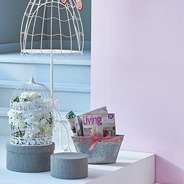
SU BAZLI İÇ CEPHE KARTELALARI
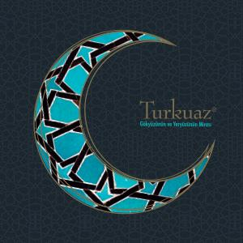
TURKUAZ RENK KOLEKSİYONU
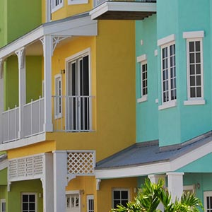
SU BAZLI DIŞ CEPHE KARTELALARI
RENK ETKİSİ KARTELALARI
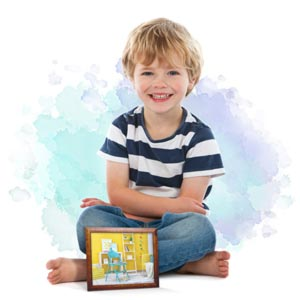
SU BAZLI İÇ CEPHE KARTELALARI
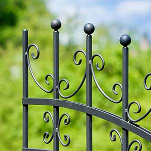
PARLAK SENTETİK BOYA ORTA RENK KARTELALARI
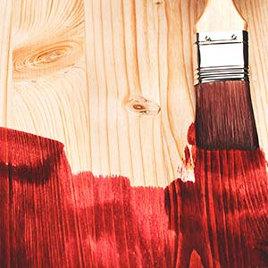
MOBİLYA KARTELALARI
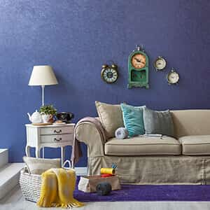
ALPİNA STYLE RENK KARTELALARI
FİLLİ BOYA GARANTİSİYLE
Filli ustam ile evinizin boya uygulamasını, müsteri memnuniyetini her zaman ön planda tutan
profesyonel ellere emanet edebileceksiniz.www.filliustam.com aracılıgı ile yaptırılan tüm ic
cephe boya uygulamaları,sistemde belirtilen şartlara göre 2YIL FİLLİ BOYA GARANTİSİ altına
alınmaktadır.
MİMAR BENİM
filli noya mimar benim modulu ile projeninizin mimar siz olacaksınız...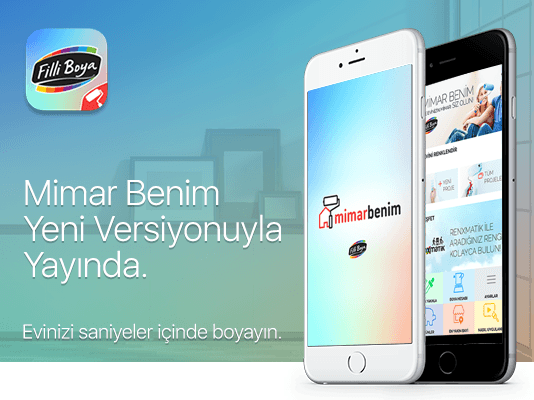..
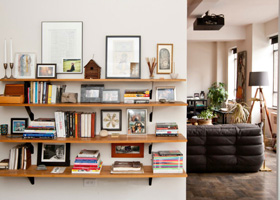
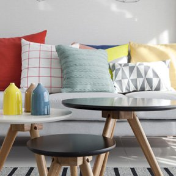